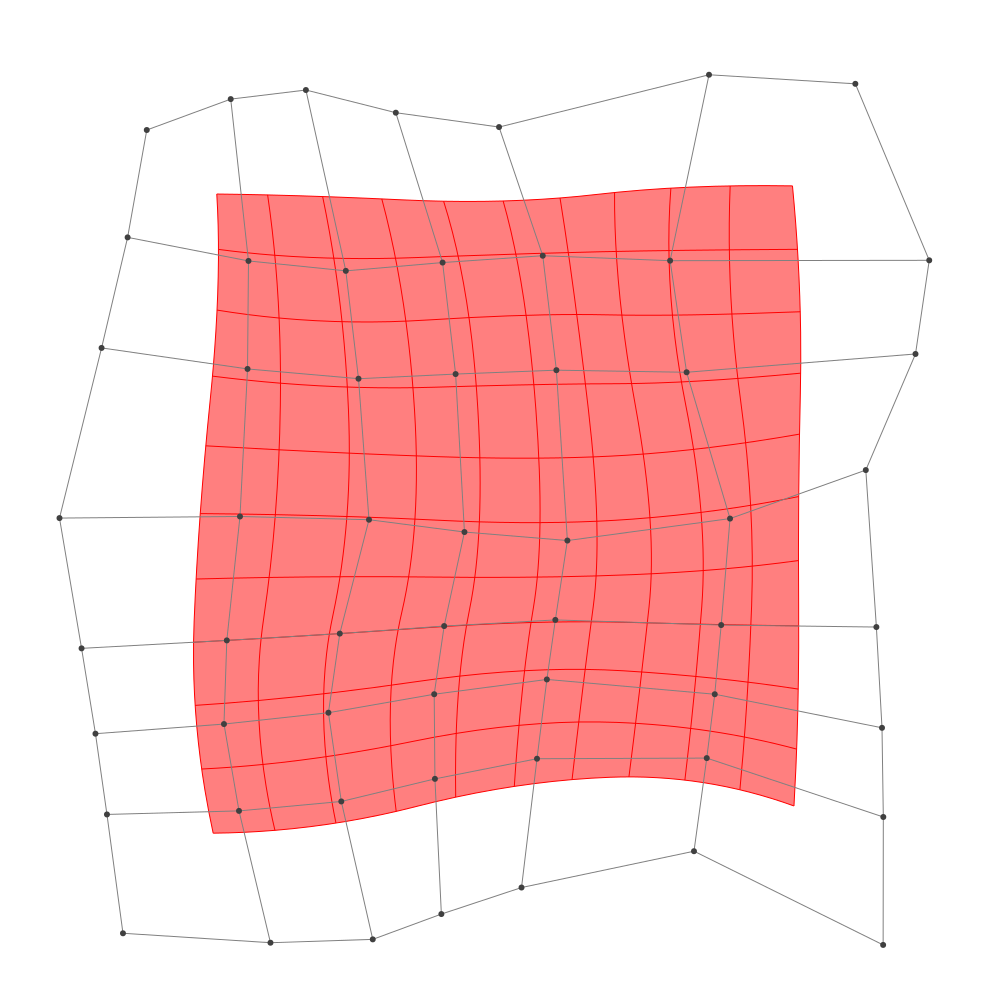
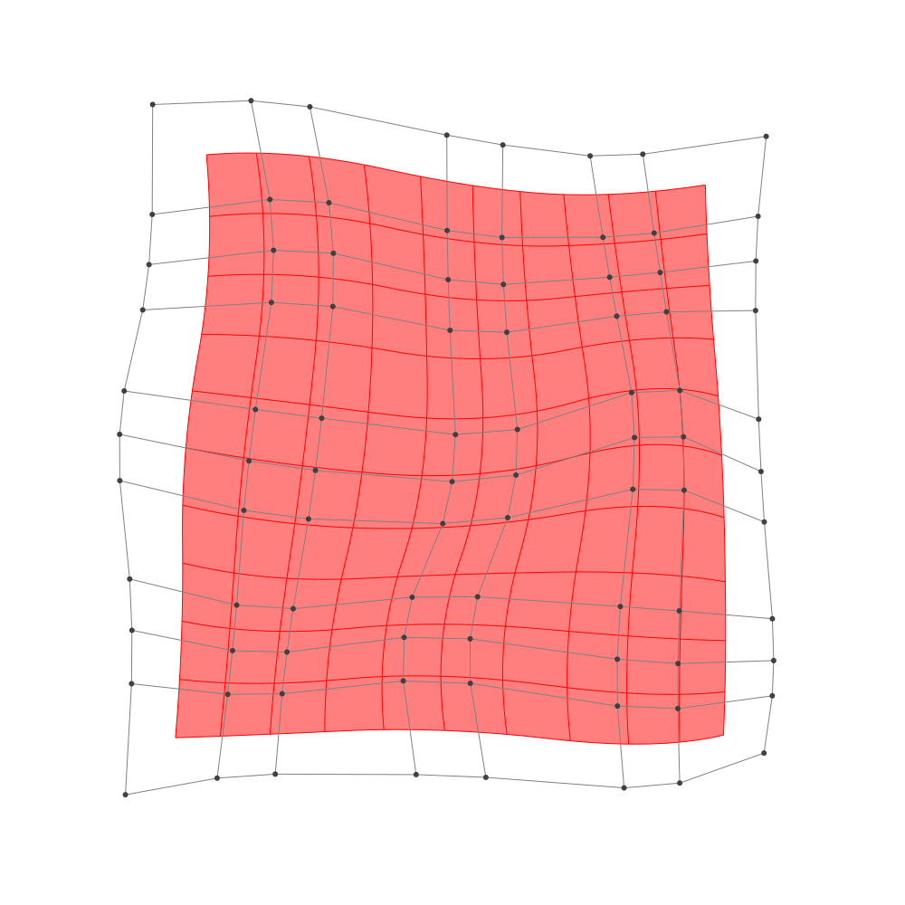

Refinement
BasicBSpline.refinement — FunctionRefinement of B-spline manifold with given B-spline spaces.
julia> p = 2 # degree of polynomial2julia> k = KnotVector(1:8) # knot vectorKnotVector([1.0, 2.0, 3.0, 4.0, 5.0, 6.0, 7.0, 8.0])julia> P = BSplineSpace{p}(k) # B-spline spaceBSplineSpace{2, Float64}(KnotVector([1.0, 2.0, 3.0, 4.0, 5.0, 6.0, 7.0, 8.0]))julia> rand_a = [SVector(rand(), rand()) for i in 1:dim(P), j in 1:dim(P)]5×5 Matrix{StaticArrays.SVector{2, Float64}}: [0.329849, 0.36067] [0.923448, 0.27474] … [0.202916, 0.814922] [0.458325, 0.0632367] [0.61345, 0.563065] [0.732638, 0.366463] [0.0859375, 0.908081] [0.871802, 0.317645] [0.528658, 0.54432] [0.956835, 0.336523] [0.578414, 0.137197] [0.79428, 0.681351] [0.167208, 0.700643] [0.585846, 0.416996] [0.83244, 0.0784984]julia> a = [SVector(2*i-6.5, 2*j-6.5) for i in 1:dim(P), j in 1:dim(P)] + rand_a # random5×5 Matrix{StaticArrays.SVector{2, Float64}}: [-4.17015, -4.13933] [-3.57655, -2.22526] … [-4.29708, 4.31492] [-2.04167, -4.43676] [-1.88655, -1.93693] [-1.76736, 3.86646] [-0.414062, -3.59192] [0.371802, -2.18236] [0.0286581, 4.04432] [2.45684, -4.16348] [2.07841, -2.3628] [2.29428, 4.18135] [3.66721, -3.79936] [4.08585, -2.083] [4.33244, 3.5785]julia> M = BSplineManifold(a,(P,P)) # Define B-spline manifoldBSplineManifold{2, (2, 2), StaticArrays.SVector{2, Float64}, Tuple{BSplineSpace{2, Float64}, BSplineSpace{2, Float64}}}((BSplineSpace{2, Float64}(KnotVector([1.0, 2.0, 3.0, 4.0, 5.0, 6.0, 7.0, 8.0])), BSplineSpace{2, Float64}(KnotVector([1.0, 2.0, 3.0, 4.0, 5.0, 6.0, 7.0, 8.0]))), StaticArrays.SVector{2, Float64}[[-4.170150939074152, -4.1393297507644045] [-3.576552184411289, -2.2252601875478626] … [-4.434364060710945, 2.0906091815075802] [-4.297083757854449, 4.314921973976807]; [-2.041674892202246, -4.436763344265782] [-1.886550284910562, -1.9369347976423628] … [-1.737579864544429, 2.018599327806112] [-1.767362388477784, 3.8664628101701792]; … ; [2.4568354492416398, -4.163476557092106] [2.0784140294689637, -2.362803188360122] … [1.6677874366047454, 2.3697865149856576] [2.29427984007567, 4.181351366393498]; [3.667208237656164, -3.7993572521287065] [4.085846492261664, -2.083004005762846] … [3.593267011911495, 1.6475396113060952] [4.332439568301601, 3.57849840882943]])
h-refinemnet
Insert additional knots to knot vector.
julia> k₊=(KnotVector(3.3,4.2),KnotVector(3.8,3.2,5.3)) # additional knotvectors(KnotVector([3.3, 4.2]), KnotVector([3.2, 3.8, 5.3]))julia> M_h = refinement(M,k₊=k₊) # refinement of B-spline manifoldBSplineManifold{2, (2, 2), StaticArrays.SVector{2, Float64}, Tuple{BSplineSpace{2, Float64}, BSplineSpace{2, Float64}}}((BSplineSpace{2, Float64}(KnotVector([1.0, 2.0, 3.0, 3.3, 4.0, 4.2, 5.0, 6.0, 7.0, 8.0])), BSplineSpace{2, Float64}(KnotVector([1.0, 2.0, 3.0, 3.2, 3.8, 4.0, 5.0, 5.3, 6.0, 7.0, 8.0]))), StaticArrays.SVector{2, Float64}[[-4.170150939074152, -4.1393297507644045] [-3.8139916862764345, -2.9908880128344792] … [-4.413772015282471, 2.424256100377964] [-4.297083757854449, 4.314921973976807]; [-2.7866415086074134, -4.3326615865403] [-2.601487173284455, -2.955773845081692] … [-2.677150913386246, 2.3407458877367566] [-2.6527648677596174, 4.023423517502499]; … ; [2.4568354492416398, -4.163476557092106] [2.229782597378034, -3.0830725358529154] … [1.761761297125384, 2.6415212426968333] [2.29427984007567, 4.181351366393498]; [3.667208237656164, -3.7993572521287065] [3.9183911904194644, -2.76954530430919] … [3.704142895370011, 1.9371834309345952] [4.332439568301601, 3.57849840882943]])julia> save_png("2dim_h-refinement.png", M_h) # save image

Note that this shape and the last shape are identical.
p-refinemnet
Increase the polynomial degree of B-spline manifold.
julia> p₊=(1,2) # additional degrees(1, 2)julia> M_p = refinement(M,p₊=p₊) # refinement of B-spline manifoldBSplineManifold{2, (3, 4), StaticArrays.SVector{2, Float64}, Tuple{BSplineSpace{3, Float64}, BSplineSpace{4, Float64}}}((BSplineSpace{3, Float64}(KnotVector([1.0, 2.0, 3.0, 3.0, 4.0, 4.0, 5.0, 5.0, 6.0, 6.0, 7.0, 8.0])), BSplineSpace{4, Float64}(KnotVector([1.0, 2.0, 3.0, 3.0, 3.0, 4.0, 4.0, 4.0, 5.0, 5.0, 5.0, 6.0, 6.0, 6.0, 7.0, 8.0]))), StaticArrays.SVector{2, Float64}[[-3.68527499873692, -3.6859780012352132] [-3.4250151336864176, -2.6801299710097006] … [-3.957540903418645, 2.619000349420261] [-3.902822654222885, 3.6997859698127775]; [-2.339369992050844, -3.7866405663349854] [-2.22526817612407, -2.5855395416405145] … [-2.1875285771059434, 2.508252228601755] [-2.1884979368401334, 3.4635547456258857]; … ; [2.597169712133317, -3.6561350025137997] [2.4743806417784917, -2.76282499501165] … [2.150018806395234, 2.707277991645836] [2.4726550208739617, 3.623009912859381]; [3.5369281834726967, -3.427442152932554] [3.679825671243929, -2.5622388528857787] … [3.4524518820862635, 2.2456790468787107] [3.8126481475380523, 3.201208950130754]])julia> save_png("2dim_p-refinement.png", M_p) # save image

Note that this shape and the last shape are identical.